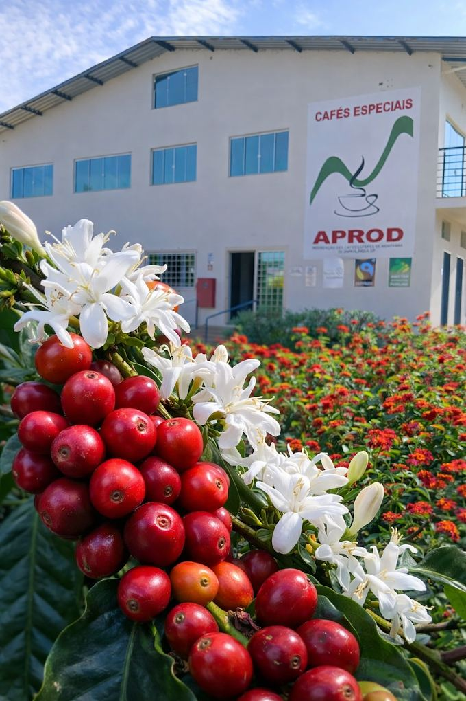

A APROD reúne cafeicultores de altitude de Divinolândia, unindo tradição familiar e qualidade especialidade para levar o melhor café das montanhas ao mundo.
Divinolândia fica na Serra da Mantiqueira, entre morros que passam de 1.300 metros de altitude. Foi ali que um grupo de pequenos produtores decidiu se unir para transformar um cultivo familiar em algo maior: uma associação dedicada exclusivamente a cafés de especialidade.
Hoje a APROD conecta mais de 40 famílias produtoras, compartilhando conhecimento sobre processamento, torra e comercialização — sempre respeitando o tempo da terra e a identidade de cada lavoura.
Nossos processos seguem selos e práticas que garantem rastreabilidade, comércio justo e respeito ao meio ambiente em cada etapa da produção.
É o principal pilar da associação, mantido ativamente por meio de auditorias periódicas de renovação. Essa certificação garante que o café respeite critérios rigorosos de direitos sociais, ambientais, governança transparente e rastreabilidade, além de conceder o Prêmio Fairtrade para reinvestimento na comunidade.
Embora seja um modelo de manejo e não uma certificação única isolada, os produtores parceiros atuam fortemente alinhados às exigências globais de ESG, conservação ambiental e projetos de carbono.
Conheça os associados que sustentam a tradição cafeeira de Divinolândia.
Nome da propriedade
Nome da propriedade
Nome da propriedade
Nome da propriedade
Entre 1.000 e 1.350 metros, as lavouras da APROD enfrentam noites frias e manhãs de neblina — condições que retardam a maturação do fruto e concentram açúcares, resultando em xícaras mais complexas e doces.
Para pedidos por atacado, visitas técnicas ou parcerias, fale com a nossa equipe.
Zona Rural, Divinolândia — SP
(19) 99999-0000
contato@aprodcafes.com.br